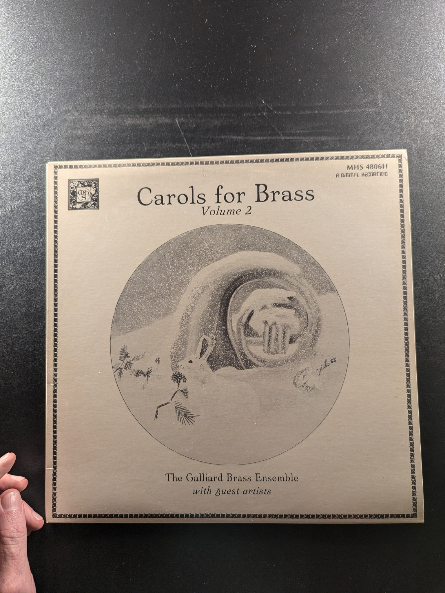

Music of the Spanish Theater in the Golden Age
New York Pro Musica
Decca Records DL 79423
Pope Marcellus Mass
Palestrina
Angel S-36032
Ten Great A Cappella Motets
Roland de Lassus (Orlando di Lasso)
624
Missa Mi-Mi / Chanson: Fors Seulement / Missa Fors Seulement
Johannes Ockeghem
The Musical Heritage Society Inc. MHS 1003
Motets from Choralis Constantinus
The Renaissance Chorus
Stereo
Renaissance Dances
Lionel Rogg, Positif Organ, and the Ancient Instrument Ensemble of Zurich
Odyssey 32 16 0035
A Concert of Early Music
Musica Reservata of London
Vanguard VSD-71125
Songs & Ayres
John Dowland
Nonesuch H-71117
Courtly Pleasures
The King's Singers
Angel
Missa Carminum / Ave Christe / Factus Est Dominus Cum Essem Parvulus Nunc Cognosco
Heinrich Isaac, Josquin Des Prez, Orlando Di Lasso
Nonesuch H-71048
Sacred and Secular Music
Ludwig Senfl
the musical heritage society inc. MHS 1390
Saint Patrick's Mass
Philip Green, Canon Sydney MacEwan, The Trinity Chorale
RCA Red Seal LSC-2976
It Was a Lover and His Lass: Music of Shakespeare's Time
New York Pro Musica
Decca DL 79422
Liturgical Music from the Russian Cathedral
Johannes-Damascenus Choir
Nonesuch H-71073
Bohemian Sacred Instrumental Music
Pro Arte Antiqua of Prague
Musical Heritage Society MHS 1702
Carols for Brass Volume 2
The Galliard Brass Ensemble
MHS 4806H
Carmina Burana (II): 13 Songs from the Benediktbeuern Manuskript circa 1300
Unknown
Telefunken 6.41315

An Evening of Elizabethan Verse and Its Music
New York Pro Musica Antiqua
Odyssey 32 16 0151
Masque Music
Concentus Musicus of Denmark
Nonesuch H-71138
The Art of Guillaume de Machaut
Ars Antiqua de Paris
The Musical Heritage Society Inc. MHS 3198
Calixtine Codex - Mozarabic Antiphonary
Unknown Artist
Unknown Label MHS 1584
Music of the Eastern Church
Choir of the Papal Russian College, Rome
Musical Heritage Society Inc. MHS 3051
Lamentationes Jeremiae / Missa tres vocum
Thomas Tallis / William Byrd
Archiv Produktion 2535 115
Lute Songs and Lute Solos
John Dowland
Musical Heritage Society Inc. MHS 1548
Voices of the Middle Ages: Music from the Gothic Cathedral
Capella Antiqua Munich
Nonesuch H-71117
{kind=link}
{kind=link}
{kind=link}
{kind=link}
{kind=link}
{kind=link}
{kind=link}
{kind=link}
{kind=link}
{kind=link}
{kind=link}
{kind=link}
{kind=link}
{kind=link}
{kind=link}
{kind=link}
{kind=link}
{kind=link}
{kind=link}
{kind=link}
{kind=link}
{kind=link}
{kind=link}
{kind=link}